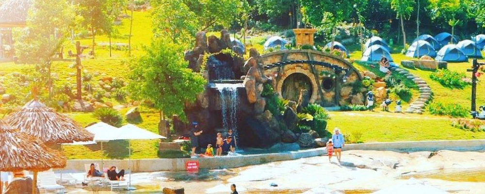

CẢNH ĐẸP THIÊN NHIÊN
Ngày đăng: 7/10/2024 - 22:10
Khám phá Bạch Mã - Hành trình đến thiên đường xanh
Giới thiệu chung

Núi Bạch Mã Huế nằm nép mình bên dãy Trường Sơn, tựa như con ngựa bạch duỗi chân hướng ra biển lớn. Với vẻ đẹp thiên nhiên hùng vĩ cùng những con thác ngoạn mục, núi Bạch Mã là điểm dừng chân lý tưởng cho những ai yêu thích khám phá và trải nghiệm.
Lịch sử hình thành
.jpg)
Với người Huế, Bạch Mã có thể xem là ngọn núi tâm linh với truyền thuyết ra đời tên gọi là từ sự tích một vị tướng cưỡi ngựa trắng bay lên núi; đứng từ cầu Lương Điền hay núi Ngự Bình nhìn về Bạch Mã ngắm mây phủ đầu non cũng nhận ra dáng hình của chiến mã nghìn năm đợi chủ. Cho đến những năm 1933 khi người Pháp phát hiện ra nơi này, kỹ sư trưởng M. Girard đã lên kế hoạch chi tiết cho việc xây dựng Bạch Mã thành một khu nghỉ dưỡng trên cao trong đó có các biệt thự cùng công trình công cộng, và cả những phân khu dành riêng cho việc trồng rừng và bảo tồn thiên nhiên. Trên đỉnh núi, người Pháp xây nơi để trú chân ngắm cảnh gọi là Vọng Hải Đài.
Từ vị trí Vọng Hải Đài có thể quan sát được toàn cảnh đèo Hải Vân, núi Túy Vân, đầm Cầu Hai, cửa Từ Hiền, vịnh Chân Mây, hồ Truồi với Trúc Lâm Bạch Mã, thậm chí là cả 2 thành phố Huế và Đà Nẵng những ngày trời quang mây tạnh. Rồi chiến tranh và thời gian đã đặt Bạch Mã vào quên lãng, phủ rêu xanh và tàn tích lên những công trình xây cất trên đỉnh núi cho đến giai đoạn 1991 khi dự án Vườn Quốc gia Bạch Mã được tái khởi động trở lại và hơn 15 năm sau đó được liên tục mở rộng cho đến quy mô hiện tại.
Đặc điểm nổi bật
.jpg)
Núi Bạch Mã Huế có thảm thực vật phong phú, đa dạng với hàng trăm loại sinh vật quý hiếm, nhiều loài đang đứng trước nguy cơ bị tuyệt chủng. Ngoài ra, Bạch Mã cũng nổi tiếng với nhiều ngọn thác và con suối lớn. Trong đó phải kể đến thác Đỗ Quyên – Con thác rộng 20m và cao 400m. Đến đây vào mùa hè, bạn sẽ được chiêm ngưỡng bức tranh hoa Đỗ Quyên nở rộ hai bên thác như thảm lụa khổng lồ.
Ngoài cảnh quan thiên nhiên tươi đẹp, hùng vĩ, núi Bạch Mã ở Huế có khí hậu mát mẻ bốn mùa. Do đó nơi đây còn được nhiều du khách ưu ái dành tặng biệt danh “Đà Lạt của miền Trung”.
Tham quan Hải Vọng Đài – Điểm cao nhất của Vườn quốc gia Bạch Mã
.jpg)
Đến khu du lịch Bạch Mã ở Huế chắc chắn bạn phải tham quan Hải Vọng Đài. Đây là công trình của người Pháp xây dựng ở trên đỉnh Bạch Mã với độ cao khoảng 1.430m so với mực nước biển.
Từ đây, bạn có thể thu trọn vào trong tầm mắt bãi biển Cảnh Dương hay vịnh Lăng Cô xinh đẹp. Hải Vọng Đài cũng là một trong những địa điểm chụp ảnh đẹp ở Huế – nơi cho ra lò những bức ảnh sống ảo nghìn like.
Nghỉ ngơi, ngắm cảnh ở Ngũ Hồ gần núi Bạch Mã Huế
Ngũ hồ ở dãy Bạch Mã Huế là tên gọi của 5 hồ nước nhỏ được kết hợp với nhau tạo thành một con suối lớn. Cách đỉnh Bạch Mã khoảng 2km, Ngũ Hồ khiến bạn “yêu ngay từ cái nhìn đầu tiên” bởi dòng nước trong xanh như ngọc cùng bức tranh thiên nhiên đẹp đến nao lòng. Du khách có thể dừng chân tại đây để nghỉ ngơi, ngắm cảnh hay check-in
Khám phá thác nước cao nhất ASEAN – thác Đỗ Quyên
.jpg)
Một trong những trải nghiệm thú vị khác khi đến rừng Bạch Mã Huế là khám phá thác Đỗ Quyên. Sở dĩ thác có cái tên thơ mộng này là bởi hai bên thác có rất nhiều hoa đỗ quyên. Vào độ tháng 3 đến tháng 4 hàng năm, những bông đỗ quyên đồng loạt khoe sắc tạo nên bức tranh thiên nhiên đẹp đến nao lòng.
Thác nằm ở giữa vách đá rộng tới 150m, ở hai bên là thảm thực vật vô cùng đa dạng. Dưới ánh nắng mặt trời, làn nước từ thác đổ xuống tung bọt trắng xóa, lấp lánh.
Leo núi Bạch Mã, tận hưởng không khí trong lành trên đỉnh
Núi Bạch Mã Huế được xem là địa điểm phượt Huế lý tưởng dành cho những tín đồ đam mê xê dịch và thích khám phá. Đến đây, bạn sẽ được trải nghiệm trekking leo núi với nhiều hoạt động thử thách bản thân như: chinh phục thác, băng qua sông suối, leo núi, trekking đường dài…
Sau khi chinh phục đỉnh Bạch Mã, bạn sẽ được tận hưởng bầu không khí sảng khoái, trong lành. Đây cũng là lý do khiến nhiều du khách yêu thích nơi này. Bởi ở đây, họ có thể tạm gác những ồn ào của chốn phố thị để đắm chìm vào khoảnh khắc thanh bình, giúp tâm hồn thư thái hơn.
Tìm hiểu hệ sinh thái đa dạng của rừng Bạch Mã
Leo núi Bạch Mã Huế, du khách còn được tìm hiểu về hệ sinh thái động – thực vật đa dạng ở đây. Ngọn núi này nằm trong vườn Quốc gia Bạch Mã ở Huế, nơi có hơn 1.700 loài động vật và hơn 2.300 loài thực vật. Trong đó, có nhiều động thực vật quý hiếm cần được bảo tồn như: voọc chà vá chân nâu, sao la, trầm hương, pơ mu…
Ghé thăm “làng người lùn” dưới chân núi Bạch Mã Huế
Làng người lùn Hobbit dưới chân núi Bạch Mã được xem là khu dã ngoại lớn nhất ở Huế. Nơi đây có những đồi cỏ xanh mướt trải dài, hồ tắm suối tự nhiên hệt như thước phim trong truyện cổ tích. Bên cạnh chụp ảnh sống ảo cùng những chú cừu hay ngôi nhà nhỏ xinh xắn, đến làng người lùn du khách còn được thoải mái tắm tại các hồ suối tự nhiên hoặc trải nghiệm cắm trại qua đêm cực kì thú vị.
Vị trí
Bạch Mã thực chất là một ngọn núi nằm trong vườn Quốc gia Bạch Mã Huế, thuộc địa phận huyện Phúc Lộc, cách trung tâm thành phố Huế khoảng 60km về phía Nam. Với độ cao 1.444m so với mực nước biển, Bạch Mã là ngọn núi ngăn cách địa phận Huế và Đà Nẵng.
LIÊN HỆ ĐỂ ĐẶT TOUR: